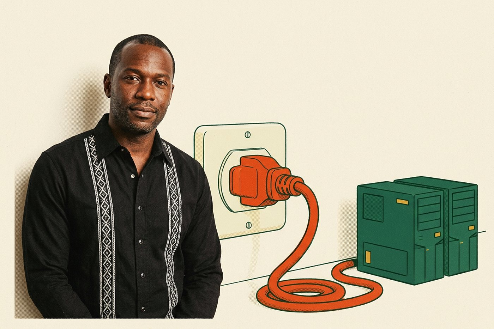

Le cloud n’existe pas — il est en béton quelque part
« Dans le cloud » ne veut pas dire « dans les airs ». Cela veut dire : sur l’ordinateur de quelqu’un d’autre, dans un bâtiment très réel.

Vos photos, vos e-mails, les vidéos que vous regardez : une partie de votre vie numérique vit « dans le cloud ». L’expression suggère quelque chose de léger, d’aérien, presque immatériel. La réalité est plus lourde : des bâtiments, des climatiseurs, des câbles sous-marins et des groupes électrogènes.
Le nuage est un bâtiment
Un centre de données est une usine à calculer. Des milliers de serveurs empilés dans des racks, alimentés en électricité, refroidis en permanence, connectés à plusieurs opérateurs réseau. On y trouve des batteries, des générateurs, des systèmes anti-incendie, et des équipes qui se relaient 24 heures sur 24.
Ces bâtiments consomment beaucoup d’énergie et d’eau, occupent des terrains et ont une empreinte matérielle bien réelle : béton, cuivre, terres rares, composants électroniques. Le cloud n’efface pas l’informatique. Il la déplace et la mutualise.
Pourquoi on appelle ça « cloud »
Dans les schémas techniques des années 1990, on dessinait un nuage pour représenter « le réseau » : un ensemble de machines dont on ne voulait pas détailler le fonctionnement. L’image est restée. Elle arrangeait tout le monde : côté utilisateur, tout paraît simple ; côté fournisseur, la complexité est cachée dans le contrat.
Le cloud, c’est l’informatique de quelqu’un d’autre, facturée à l’usage, derrière un contrat.
Ce qu’on loue exactement
Le cloud regroupe plusieurs couches. On peut louer des machines brutes (IaaS), une plateforme prête à exécuter des applications (PaaS), ou un logiciel complet accessible par navigateur (SaaS). On peut aussi louer du stockage, des bases de données, des services d’intelligence artificielle, des réseaux.
- IaaS : des serveurs et du stockage virtuels, que vous administrez.
- PaaS : un environnement d’exécution, sans gérer la machine.
- SaaS : l’application finie, comme une messagerie ou un outil de gestion.
L’intérêt est réel : pas d’achat de matériel, une capacité qui s’adapte à la demande, des sauvegardes et une sécurité de base souvent incluses. Pour une petite structure, c’est parfois plus sûr qu’un serveur mal configuré dans un placard.
Les coûts cachés
La facture cloud est élastique, dans les deux sens. Les tarifs à l’usage peuvent sembler minuscules, puis devenir vertigineux quand le trafic explose ou qu’une erreur fait tourner des machines inutiles. Les sorties de données (egress) sont souvent facturées, parfois cher. Et chaque service managé ajoute sa propre ligne.
Il y a aussi des coûts moins visibles : la complexité des architectures, la dépendance à un fournisseur, la difficulté à changer d’hébergeur, et la perte de compétences internes. Une équipe qui ne sait plus administrer un serveur devient dépendante de son fournisseur.
Souveraineté et dépendance
Où sont stockées les données ? Qui peut y accéder ? Quel droit s’applique ? Ces questions comptent pour une administration, une banque, un hôpital. Le cloud dit « mondial », mais les lois, elles, restent territoriales. Choisir un fournisseur, c’est aussi choisir un régime juridique et une chaîne de sous-traitants.
Localisation des données, conditions de sortie, engagement de disponibilité, coût des transferts, procédure en cas de panne, et ce qui se passe si vous voulez partir.
Le cloud est un outil formidable, à condition de savoir ce qu’on loue. Ce n’est pas un lieu magique : c’est un contrat, des machines et des câbles. Les regarder en face évite les mauvaises surprises.
L’essentiel en 3 points
- Le cloud repose sur des centres de données physiques, énergivores et territoriaux.
- On loue des machines, des plateformes ou des logiciels — avec des contrats et des limites.
- La dépendance et les coûts de sortie méritent d’être anticipés dès le départ.
Sources principales
Pour vérifier, approfondir ou prendre en compte l’évolution du sujet.

Une API, c’est une prise électrique pour logiciels
Derrière chaque paiement en ligne, chaque bulletin météo et chaque réponse de chatbot, il y a une API. Voici ce que c’est, sans jargon.

L’IA générative est un perroquet statistique
Comprendre une IA générative commence par un mécanisme : elle calcule ce qui a le plus de chances de venir après. Et c’est déjà une petite révolution.